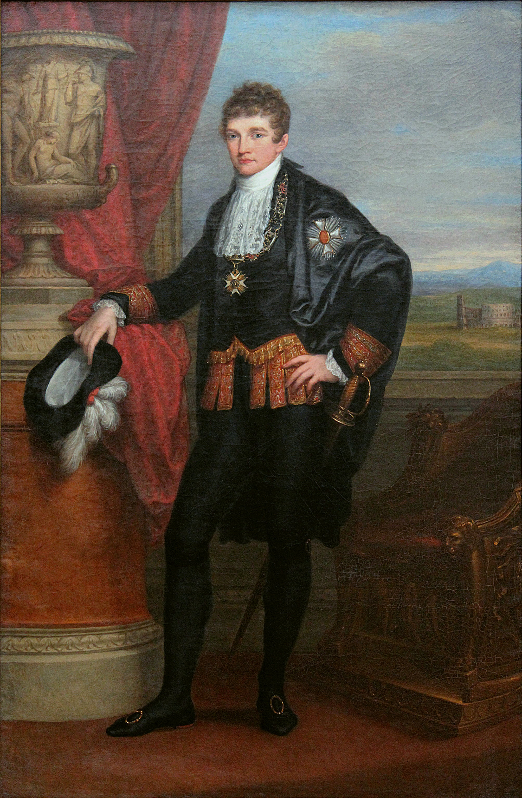
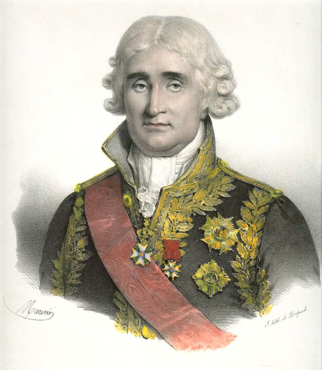
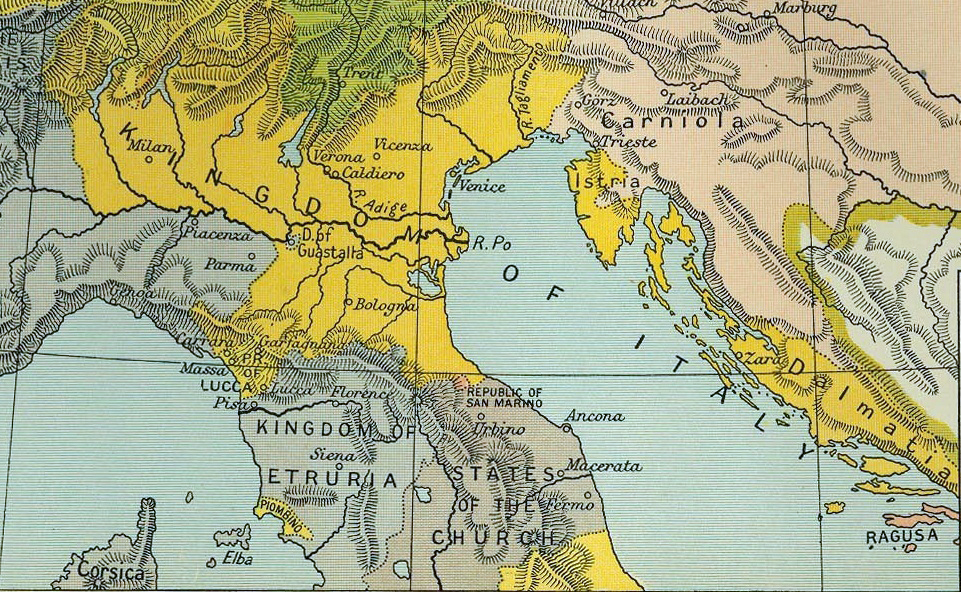
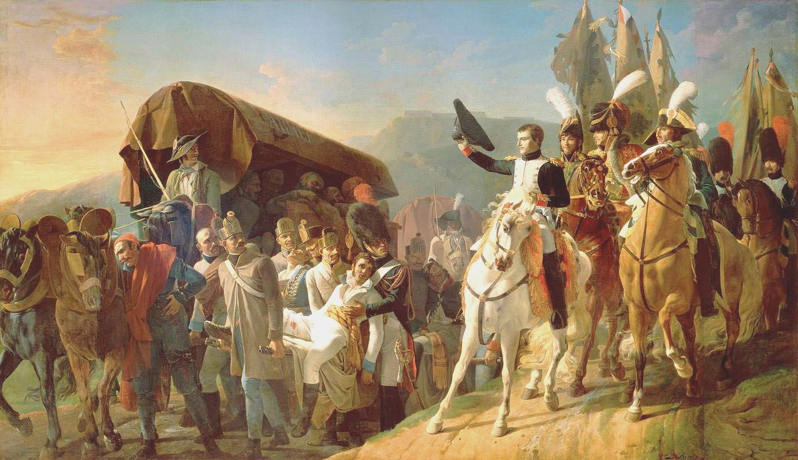
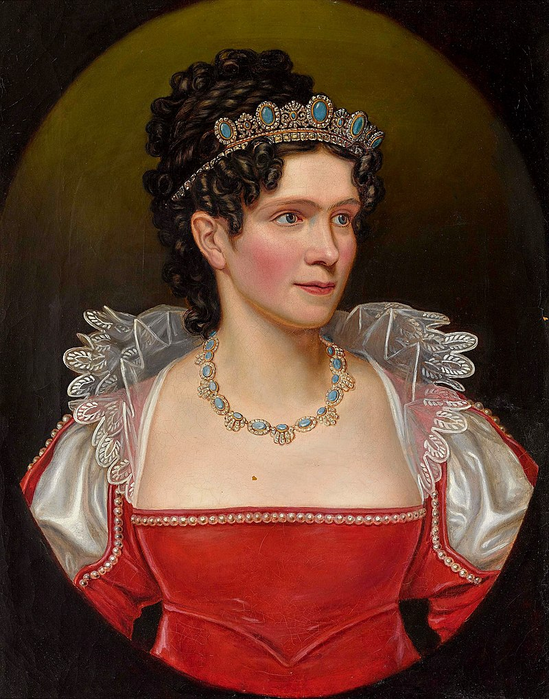
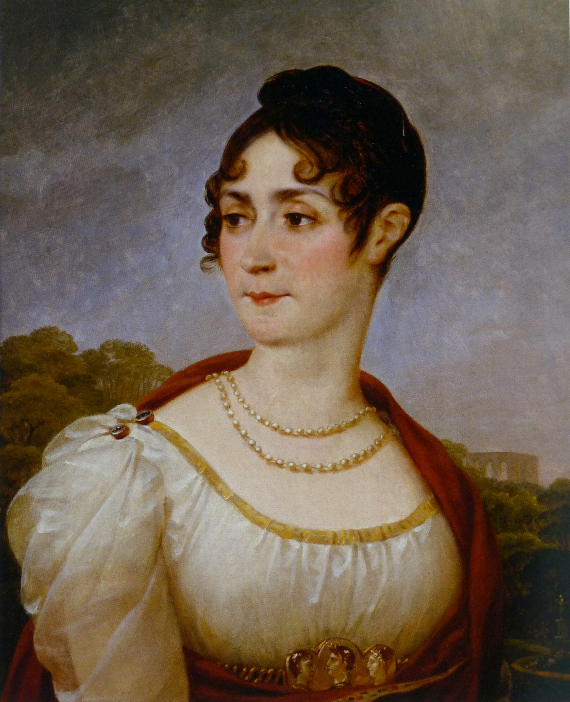

바이에른의 배신 (7) - 외젠의 결혼 (중)
게시: 2024-09-23T06:30:13+09:00
이 혼담의 주인공인 아우구스타 공주는 1804년 하반기부터 대체 뭐가 어떻게 돌아가는 것인지 매우 혼란스러워 했습니다. 1805년 4월, 그녀는 꽤 가까운 사이였던 2살 연상의 친오빠 루드비히(Ludwig Karl August von Pfalz-Birkenfeld-Zweibrücken)에게 다음과 같은 편지를 보냈습니다. 당시 루드비히는 그 시절 유럽 귀족가문 자제들 사이에 유행이던 소위 '그랜드 투어'(grand tour)를 위해 이탈리아 여행 중이었거든요. "...아빠가 카알과의 약혼을 바라지만, 프랑스를 두려워 하는 것 같아. 내 생각엔 주바이에른 프랑스 대사 오토(Otto)는 나를 외젠 보아르네에게 시집 보내라는 명령을 받고 있는 모양이야. 카알 왕자와의 약혼이 확실히 매듭지어지지 않은 상태에서 그걸 거절하는 것은 무척 위험한 일인데, 그런 일로 인해 우리 집안에 어떤 불명예가 닥칠지는 생각하고 싶지도 않아. 나의 이 편지가 그들에 의해 개봉되지 않았으면 해. 내가 사랑하는 오빠에게 무슨 내용의 편지를 쓰는지 다른 사람들이 알아내는 것은 사양하고 싶거든. 이만 총총. 성당 미사가 훨씬 일찍 시작하네." 이 편지에서 아우구스타 공주는 대체 왜 카알과의 약혼이 이렇게 서둘러 이루어지는지 의아해하면서도 이미 알 건 다 아는 사람처럼 썼습니다. 대체 누가 공주의 편지를 미리 열어본다는 것일까요? 나폴레옹을 위해 일하는 첩자들? 아빠인 막시밀리안 1세? 아무튼 아우구스타는 저 편지에서 외젠 보아르네(Beauharnais)를 Boharnet라고 표기했는데, 이는 완전히 틀린 스펠링이었습니다. 그러니까 아우구스타는 저때까지만 해도 외젠 보아르네의 이름을 사람들 입으로만 전해들은 것이고 제대로 된 문서로는 한 번도 본 적이 없었다는 소리입니다.

(아우구스타의 오빠이자 막시밀리안의 맏아들로서 훗날 바이에른 국왕 루드비히 1세가 되는 루드비히입니다. 1807년의 초상화로서 당시 21세의 피끓는 젊은이였는데, 외젠보다는 5살 어렸고 아우구스타보다는 2살 많았습니다.) 또 중요한 점이 있습니다. 이 편지가 독일어로 쓰여졌다는 것이었습니다. 독일 공주가 독일어로 쓰는 것이 뭐가 이상하냐고요? 당시 독일 귀족들끼리는, 특히 편지나 문서 등을 작성할 때는 프랑스어로 하는 것이 상식이었습니다. 막시밀리안 1세도 언제나 프랑스어로 편지를 썼습니다. 그러나 서서히 퍼져 나가는 독일 민족주의는 어느덧 막시밀리안 1세의 가정에도 번졌던 것입니다. 아마 아우구스타 공주가 독일어로 편지를 쓴 이유는 특히 그 수신자인 오빠 루드비히 때문이었을 것입니다. 바이에른 대공국의 계승권자인 오빠 루드비히는 꽤 강렬한 반(反)프랑스주의자였던 것입니다. 아직 어렸던 루드비히는 몽겔라스의 지령(?)을 거의 그대로 따르는 아버지 막시밀리안 1세에게 큰 영향을 끼치지는 못했지만, 결국 1813년 라이프치히 전투 직전 나폴레옹의 운명에 대못을 박는 결정적인 역할을 하게 됩니다. 이렇게 결혼을 하네 못하네 무능한 독일 귀족들이 옥신각신하는 동안 나폴레옹은 나폴레옹대로 속이 탔습니다. 생각해보면 외젠이 자신의 의붓아들이라는 것 뺴면 공적인 직위가 좀 빈약한 것은 사실이었습니다. 외젠은 프랑스군 준장 계급을 가지고 있었고 프랑스 제국 대공( (Prince français)이라는 작위에 국무 대재상(l’archichancelier d’État)이라는 공식 직함도 있었습니다. 그러나 이 모든 자리는 분명히 명예직일 뿐 실권이 있는 자리가 아니었고, 외젠에게 아부하여 한자리 꿰차려는 사람은 아무도 없었습니다.

(국무 대재상(l’archichancelier d’État)이라는 직함은 chanceller라는 단어를 보면 뭔가 재무직처럼 보이지만 실은 외교 의전 관련 직책이었습니다. 국무 대재상 위의 직함으로는 황실 대재상(l'archichancelier de l’Empire)이 있었는데, 그 직을 맡은 사람은 한때 통령 정부에서 나폴레옹과 함께 3명의 통령을 구성하던 한 명으로서 나폴레옹 제국의 저명한 법률가이자 실세 관료인 캉바세레스(Jean-Jacques-Régis de Cambacérès)였습니다. 캉바세레스는 동성애자로도 유명했는데, 당시 형법으로는 동성애자는 처벌 대상이었지만 그는 자신이 동성애자라는 것을 숨기려 하지 않았고, 나폴레옹도 그가 동성애자라는 것을 잘 알고 있었으며 그에 대해 자주 농담을 하기도 했다고 합니다.) 그래서 나폴레옹은 1805년 3월, 자신이 이탈리아 왕국의 국왕으로 등극하면서 동시에 외젠에게 큼직한 직책을 내리기로 합니다. 바로 이탈리아 왕국의 부왕(副王) 자리였습니다. 부왕이란 프랑스어로 viceroi로서, 대리라는 뜻의 접두사 vice와 왕이라는 뜻의 roi가 합쳐진 것이었습니다. 현재 미국으로 치면 글자 그대로 부통령(vice president)이고 역할도 딱 그 부통령 역할로서, 부왕이란 나폴레옹이 없는 사이 왕 대리 노릇을 하는 직책이었습니다. 그런데 나폴레옹은 주로 파리나 유럽 이곳저곳의 전장터에 있어야 했으므로 외젠이 이탈리아 왕국의 실제적인 왕노릇을 하게 된 것입니다. 이건 대단한 승진이었고, 나폴레옹으로서는 외젠을 바이에른 궁정에 들이밀 만한 사윗감으로 만들기 위해 할 수 있는 바를 다 한 셈이었습니다.

(이탈리아 왕국이라 함은 실질적으로는 북동부 이탈리아를 말하는 것으로서, 대략 과거의 밀라노 공작령과 베네치아 공화국령을 합친 지역이었습니다. 수도는 밀라노였습니다. 이 지도는 1807년의 모습입니다.)
(부통령이라고 다 존재감 없는 잉여가 아닙니다. 크리스천 베일 주연의 'Vice'라는 2018년 영화는 부시의 부통령이었지만 실세나 다름없었던 딕 체니에 대한 영화인데, 정말 재미있습니다. 꼭 보십시요.) 이런 상황 속에서 혼사를 재촉하는 촉매는 뜻밖에 오스트리아로부터 날아왔습니다. 제3차 대불동맹전쟁이 벌어지면서 1805년 9월에 오스트리아가 바이에른을 침공한 것입니다. 정확하게는 오스트리아로서는 '프랑스를 칠 것이니 바이에른은 길을 빌려다오'라는 어디서 많이 들어본 대사를 외치며 바이에른 국경을 넘은 것이지만, 이미 8월에 나폴레옹의 강압에 떠밀려 프랑스와 군사 동맹을 맺은 상태였던 (이 과정에 대해서는 https://nasica-old.tistory.com/6862536 참조) 바이에른에게는 그야말로 전면전이 시작된 셈이었고 막시밀리안 1세와 카롤라인, 그리고 아우구스타 공주 등은 뮌헨을 버리고 피난을 떠나야 했습니다. 이들의 난민 생활은 그리 길지 않았습니다. 베르나도트가 10월에 뮌헨을 탈환했고 울름(Ulm) 전투에서 오스트리아군 상당수가 포로가 되었기 때문이었습니다. 11월에는 나폴레옹이 친히 뮌헨에 입성하여 막시밀리안 1세와 만났는데, 이 자리에서 나폴레옹은 잔뜩 움츠러든 막시밀리안 1세에게 다시 외젠과 아우구스타의 혼사를 이야기하여 동의를 받았습니다. 그러나 그 코르시카 괴물과 무슨 이야기를 했느냐고 도끼눈을 뜨고 캐묻는 카롤리나 대공비에게 막시밀리안은 '아무 약속도 하지 않았다'라고 손사래를 쳐야 했습니다. 하지만 이미 카롤라인 대공비 몰래 프랑스와의 군사 동맹 협정에도 서명했던 막시밀리안의 말은 카롤라인도 믿지 않았습니다.

(울름 포위전에서 항복한 오스트리아군 부상병들에게 나폴레옹이 모자를 벗어 경의를 표하는 모습입니다. 실제로 저런 일이 있었는지는 모르겠습니다.)
외젠의 혼담을 성사시킨 (혹은 성사시켰다고 믿은) 나폴레옹은 상쾌한 마음으로 12월에 아우스테를리츠의 대승을 거둡니다. 그런데 외젠의 결혼에 있어서 아우스테를리츠의 빛나는 승리보다 더 중요한 일이 곧 이어 벌어집니다. 황후이자 외젠 엄마를 겸직하고 있던 조세핀이 뮌헨에 시누이인 카롤라인 뮈라와 함께 나타난 것입니다. 프랑스 황후가 직접 수도 뮌헨에 나타났으니 카롤리나 대공비로서는 아무리 꼴보기 싫다고 하더라도 직접 나와 응접을 해야 했습니다. 여기서 이 만만치 않은 두 예비 사돈댁들은 그야말로 눈에서 레이저 광선을 서로에게 난사했습니다.

(바덴 출신인 카롤리나 대공비는 막시밀리안의 후처였는데, 실은 나폴레옹을 혐오할 이유가 있었습니다. 제3차 대불동맹전쟁이 발발한 이유 중 하나가 나폴레옹이 저지른 앙기엥 공작의 사법 살인이었는데, 카롤리나 대공비가 더 젊었을 때 바로 그 앙기엥 공작과 혼사가 오가던 사이였던 것입니다.)

(조세핀 황후입니다. 누가 뭐래도 나폴레옹의 마음을 사로잡은 여걸로서, 어느 누구와 맞짱을 떠서 질 사람은 아니었습니다. 이 초상화도 그로(Gros)의 그림입니다.)
카롤라인 대공비는 조세핀을 만나고 난 뒤 더더욱 외젠 따위에게 (자기 친딸도 아니지만) 아우구스타 공주를 보내는 것에 대해 심사가 뒤틀렸습니다. 카롤라인이 목에 핏대를 올리며 저 상스러운 크레올 여편네의 아들 따위에게 꽃같은 딸을 보낼 거냐고 막시밀리안을 추궁했지만, 막시밀리안은 정말 무책임하게도 두 손을 내저으며 여전히 자신은 나폴레옹에게 아무것도 약속한 것이 없고 외젠 보아르네라는 이름은 들어본 적도 없으며 아우구스타는 카알 폰 바덴에게 약혼이 된 상태라고 둘러댔습니다. 그러나 그렇게 오스트리아에게 대승을 거둔 1805년의 크리스마스는 막시밀리안에게 최악의 크리스마스가 될 예정이었습니다. Source : The Life of Napoleon Bonaparte, by William Milligan Sloane Napoleon and the Struggle for Germany, by Leggiere, Michael V With Napoleon's Guns by Colonel Jean-Nicolas-Auguste Noël https://en.wikipedia.org/wiki/History_of_Bavaria https://en.wikipedia.org/wiki/Ludwig_I_of_Bavaria https://www.thenapoleonicwars.net/forum/key-figures-of-the-era/eugene-beauharnais-and-the-wittelsbach-family https://en.wikipedia.org/wiki/Caroline_of_Baden https://en.wikipedia.org/wiki/Princess_Augusta_of_Bavaria https://fr.wikipedia.org/wiki/Grands_dignitaires_de_l%27Empire_fran%C3%A7ais https://en.wikipedia.org/wiki/Kingdom_of_Italy_(Napoleonic) https://en.wikipedia.org/wiki/Battle_of_Ulm